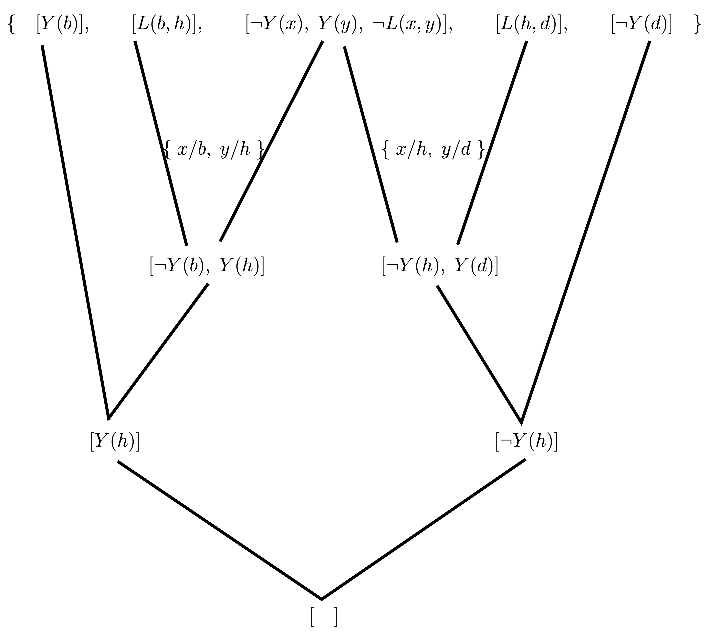

First order resolution
Learning outcomes:
After completing this lesson you should be able to:
-
convert first order formulas to clausal form, including the use of Skolem functions and Skolem constants
-
manipulate substitutions including applying them to formulas and composing substitutions with each other
-
find most general unifiers when they exist and identify the two situations ("clash" and "cyclic") when unification is impossible
-
carry out resolution refutation in first order logic.
Resolution in first order logic
Example:
Can an algorithm tell if \(\exists x \; \exists y \;(Y(x) \wedge L(x,y) \wedge \neg Y(y))\) is a logical consequence of \(L(b,h),\;\; L(h,d),\;\; Y(b),\;\; \neg Y(d)\)?
Resolution works very much as before:
-
Convert knowledge base and negated query to clauses
-
Keep resolving until get empty clause or cannot continue
What's the complication with first order resolution?
We will get clauses like this:
The \(x\), \(y\) are treated as universally quantified here.
Informally: everyone likes the donut and Bart does not like anything.
We get a contradiction from
This generates the empty clause as before. But how do we find what needs to be substituted for \(x\) and \(y\)? This process of making formulas the same is called unification.
Key ideas
-
Conversion of first order formulas to clausal form
- Skolemisation (dealing with existentials in clausifying)
-
Resolving clauses
-
Unification (needed to make clauses match)
-
Substitutions (needed to do unification)
-
Most general unifiers (the best ones)
-
Unification algorithm
-
-
Resolution (basically as in propositional case)
-
Factoring (extra rule needed in 1st order case)
-
Refutation - adding negation of query to knowledge base and looking for contradiction
-
Conversion to clausal form: first order case
-
Eliminate \(\to\) (as before)
-
Move \(\neg\) inwards (as before)
- \(\neg \forall x\; \alpha\) rewrites to \(\exists x \;\neg \alpha\)
- \(\neg \exists x\; \alpha\) rewrites to \(\forall x \;\neg \alpha\)
-
Eliminate remaining existentials (see later)
-
Rename variables so \(v\) different for each \(\forall v\) (standardise apart)
-
Move \(\forall\)s to front -- same occurrences will be bound by each \(\forall\)
-
Distribute \(\wedge\) over \(\vee\) (as before)
Finally, rename variables so different clauses have different variables
Eliminating existentials: Skolemization
Idea: Replace \(\exists x\; P(x)\) by \(P(c)\), where \(c\) is a new constant.
The constant symbol \(c\) is a name for the thing with property \(P\) whose existence is asserted in \(\exists x\; P(x)\).
Think about \(\forall w\; \exists x \; x > w\) when talking about numbers \(0, 1, 2, \ldots\). We cannot replace \(x\) by a constant, because there is no number that is greater than all numbers. The \(x\) claimed to exist has to depend on \(w\), so we need a function of \(w\) not a constant.
In general, if \(x_1, \ldots, x_n\) are the universally quantified variables with scope including \(\exists x \;\alpha\), then replace all the occurrences of \(x\) in \(\exists x \;\alpha\) by \(f(x_1,\ldots, x_n)\), where \(f\) is a new function symbol (one not already occurring elsewhere).
-
\(\forall x \exists y \; \mathit{Loves}(x,y)\) skolemizes to \(\forall x\; \mathit{Loves}(x,f(x))\).
-
\(\exists y \forall x\; \mathit{Loves}(x,y)\) skolemizes to \(\forall x\; \mathit{Loves}(x,c)\).
-
\(c\) and \(f\) are called skolem constants/functions
Skolemization doesn't preserve logical equivalence
-
\(\exists x \;P(x)\) isn't logically equivalent to \(P(c)\). In the former case, interpretation of \(c\) doesn't matter.
-
Skolemization does preserve satisfiability. All we need is to preserve satisfiability for refutation completeness.
Skolem function example
In an example like
the thing called \(x\) that is claimed to exist can depend on \(w\), and the thing called \(z\) that is claimed to exist can depend both on \(w\) and on \(y\).
Here we need to introduce a unary Skolem function to eliminate the \(\exists x\) and a binary Skolem function to eliminate the \(\exists z\).
If we introduce new function symbols \(f\) and \(g\) for these we get
Skolemization can be done on any formula. In producing clausal form we make use of it at a particular stage in the process.
Clausal form: Example 1
Put into clausal form
- Eliminate \(\to\) \(\forall x\; (\neg \mathit{Person}(x) \vee \exists y\; (\mathit{Rat}(y) \wedge \mathit{CloseTo}(y,x)))\)
- Move \(\neg\) inwards. (nothing to do here)
- Eliminate remaining existentials \(\forall x\; (\neg \mathit{Person}(x) \vee (\mathit{Rat}(\mathit{rc}(x)) \wedge \mathit{CloseTo}(\mathit{rc}(x),x)))\) where \(\mathit{rc}\) is a Skolem function, and we think of \(\mathit{rc}(x)\) as being the rat for person \(x\).
- Rename variables (nothing to do here)
- Move \(\forall\)s to front (nothing to do here). After this stage it isn't necessary to write the \(\forall\)s any more.
- Distribute \(\wedge\) over \(\vee\) \((\neg \mathit{Person}(x) \vee \mathit{Rat}(\mathit{rc}(x))) \; \wedge \; (\neg \mathit{Person}(x) \vee \mathit{CloseTo}(\mathit{rc}(x),x)))\)
Write as set of clauses:
Note this is equivalent to
since \(\forall x\; (P(x) \wedge Q(x))\) is equivalent to \((\forall x\; P(x)) \wedge (\forall x\; Q(x))\)
Clausal form: Example 2
The following video talks through this example.
Put into clausal form:
The process is explained step by step in the video. The steps are also repeated here:
-
Eliminate \(\to\). (nothing to do here)
-
Move \(\neg\) inwards. (I'll go slowly, one step at a time)
-
\((\forall y\; P(y)) \vee (\exists x\; (P(x) \wedge ( \neg Q(x) \wedge \neg \exists y \; \forall z\; (P(y) \wedge Q(z)))))\)
-
\((\forall y\; P(y)) \vee (\exists x\; (P(x) \wedge ( \neg Q(x) \wedge \forall y \;\neg \forall z\; (P(y) \wedge Q(z)))))\)
-
\((\forall y\; P(y)) \vee (\exists x\; (P(x) \wedge ( \neg Q(x) \wedge \forall y \; \exists z\; \neg (P(y) \wedge Q(z)))))\)
-
\((\forall y\; P(y)) \vee (\exists x\; (P(x) \wedge ( \neg Q(x) \wedge \forall y \; \exists z\; (\neg P(y) \vee \neg Q(z)))))\)
-
-
Eliminate remaining existentials
-
\((\forall y\; P(y)) \vee (P(c) \wedge ( \neg Q(c) \wedge \forall y \; \exists z\; (\neg P(y) \vee \neg Q(z))))\) where \(c\) is a Skolem constant
-
\((\forall y\; P(y)) \vee (P(c) \wedge ( \neg Q(c) \wedge \forall y \; (\neg P(y) \vee \neg Q(f(y)))))\) where \(f\) is a Skolem function
-
-
Rename variables.
- \((\forall w\; P(w)) \vee (P(c) \wedge ( \neg Q(c) \wedge \forall y \; (\neg P(y) \vee \neg Q(f(y)))))\)
-
Move \(\forall\)s to front.
- \(\forall w\; \forall y\;(P(w) \vee(P(c) \wedge(\neg Q(c) \wedge(\neg P(y) \vee \neg Q(f(y))))))\)
- After this stage it is not necessary to write the \(\forall\)s any more, because we know where they would go (order is irrelevant).
-
\(P(w) \vee(P(c) \wedge(\neg Q(c) \wedge(\neg P(y) \vee \neg Q(f(y)))))\)
-
We have got this far: \(P(w) \vee(P(c) \wedge(\neg Q(c) \wedge(\neg P(y) \vee \neg Q(f(y)))))\)
-
Distribute \(\wedge\) over \(\vee\)
Lets introduce some temporary notation
Working on this we get:
and then
and back to the actual expressions
We have now got to:
Finally we write as a set of clauses:
Rename variables so different clauses have different variables
Answer:
Substitutions
-
A substitution is a finite set of pairs \(\{x_1/t_1,\ldots,x_n/t_n\}\) where the \(x_i\) are distinct variables and the \(t_i\) are arbitrary terms.
-
If \(\theta\) is a substitution and \(\rho\) is a literal, then \(\theta \rho\) is the literal that results from simultaneously replacing each \(x_i\) in \(\rho\) by \(t_i\).
-
E.g. if \(\theta = \{x/a, y/k(x,b,z)\}\) and \(\rho = P(x,z,g(x,y))\) then \(\theta \rho = P(a,z,g(a,k(x,b,z)))\).
-
Similarly if \(\rho\) is a clause, or a term.
-
\(\rho\) is an instance of \(\rho'\) if for some \(\theta\) we have \(\theta \rho' = \rho\).
-
Convention here: \(u, v, w, x, y, z\) variables; \(a, b, c, d\) constant symbols; \(f,g,h,k\) function symbols usually; \(P, Q,R\) predicate symbols
-
Lots of different notations exist for substitutions e.g \(a/x\) instead of \(x/a\). Some people write \(\rho \theta\) instead of \(\theta \rho\).
Applying substitutions: Examples
\(a, b\) are constant symbols, \(x, y, z\) are variables.
Composing substitutions
If \(\theta\), \(\varphi\) are substitutions and \(\theta = \{x_1 / t_1, \ldots, x_n / t_n\}\) then
\(\{v_1, \ldots, v_m\}\) being all variables \(v\) where \(\theta v= v\) and \(\varphi v \neq v\).
Composing substitutions: Example
\(\{y / f(z), x / a\} \quad \{x / f(y)\} = \{x / f(f(z)), y /f(z)\}\)
\(\{y/b\} \quad \{x / a\} = \{x/a, y/b\}\)
\(\{y / x\}\quad \{x / y\} = \{x/x, y/x\} = \{y/x\}\)
\(\{x/y\} \quad \{y/x\} = \{x/y\}\)
\(\{z / f(x)\} \quad \{x / f(y), y / f(z)\} = \{ x/f(y), y/f(f(x)), z/ f(x)\}\)
\(\{x / f(y), y / f(x)\} \quad \{x / f(y), y / f(x)\} = \{x / f(f(x)), y / f(f(y))\}\)
\(\{z/x, x/y\} \quad \{x / y, y/z\} = \{x/y, y/x, z/x\}\)
The refutation process
First order resolution
-
Given two clauses:
\(c_1 \cup [\rho_1] \quad c_2 \cup [\neg \rho_2]\)
rename variables so the two clauses share no variables
let \(\theta\) be a substitution such that \(\theta \rho_1 = \theta \rho_2\)
we say: \(\theta\) unifies \(\rho_1\) and \(\rho_2\)
and that: \(\theta\) is a unifier of \(\rho_1\) and \(\rho_2\)
Binary resolvent is \(\theta (c_1 \cup c_2)\). Result of resolving.
-
Sound and refutation complete
(if add one more rule -- see later: factoring)
note: equality needs some special treatment beyond what will fit here.
Example
Is this a logical consequence of these?
Simplifying the notation, we ask whether
is a logical consequence of \(L(b,h),\;\; L(h,d),\;\; Y(b),\;\; \neg Y(d)\).
The answer is 'yes', but we cannot be certain what \(x\) and \(y\) are. There are 2 cases depending on the interpretation of \(Y(h)\).
The knowledge base (KB) we have is this:
The query we are asking with respect to the knowledge base is this:
When the query is negated and put into clausal form we get:
The resolution process is shown in this diagram:

Select for full text description
Line one: open curly bracket, open square bracket, upper case Y, open rounded bracket, lower case b, closed rounded bracket, closed square bracket, (end of first formula), comma, open square bracket, upper case L, open rounded bracket, lower case b, comma, lower case h, closed rounded bracket, closed square bracket, (end of second formula), comma, open square bracket, it is not the case that upper case Y, open rounded bracket, lower case x closed rounded bracket, comma, upper case Y, open rounded bracket, lower case y, closed rounded bracket, comma, it is not the case that upper case L, open rounded bracket, lower case x, comma, lower case y, closed rounded bracket, closed square bracket, (end of third formula), comma, open square bracket, upper case L, open rounded bracket, lower case h, comma, lower case d, closed rounded bracket, closed square bracket, (end of fourth formula,) comma, open square bracket, it is not the case that upper case Y, open rounded bracket, lower case d, closed rounded bracket, closed square bracket, (end of fifth formula) closed curly bracket. A black line leaves the first formula displayed in line one to reach formula open square bracket, upper case Y, open rounded bracket, lower case h, closed rounded bracket, closed rounded bracket, in line four. Two black lines leave the second and third formulae displayed in line one respectively, to reach the formula open square bracket, it is not the case that upper case Y, open rounded bracket, lower case b, closed rounded bracket, comma, upper case Y, open rounded bracket, lower case h, closed rounded bracket, closed square bracket, in line three. Two black lines leave the third and fourth formulae displayed in line one to reach the formula open square bracket, it is not the case that upper case Y, open rounded bracket, lower case h, closed rounded bracket, comma, upper case Y, open rounded bracket, lower case d, closed rounded bracket, closed square bracket, in line three. A black line leaves the fifth formula displayed in line one to reach the formula open square bracket it is not the case that Y, open rounded bracket, lower case h, closed rounded bracket, closed square bracket in line three.
Line two: open curly bracket lower case x, slash, lower case b, comma, lower case y, slash, lower case h, closed curly bracket. This writing is displayed in the space formed by the second and third black lines described in line one. Open curly bracket lower case x, slash, lower case h, comma, lower case y, comma, lower case d, closed curly bracket. This writing is displayed in the space formed by the fourth and fifth black lines described in line one.
Line three: open square bracket, it is not the case that, upper case Y, open rounded bracket, lower case b, closed rounded bracket, comma, upper case Y, open rounded bracket, lower case h, closed rounded bracket, closed square bracket (end of first formula). Open square bracket, it is not the case that, upper case Y, open rounded bracket, lower case h, closed rounded bracket, comma, upper case Y, open rounded bracket, lower case d, closed rounded bracket, closed square bracket (end of second formula). There is a black line leaving the first formula displayed in line three and reaching the formula open square bracket, upper case Y, open rounded bracket, lower case h, closed rounded bracket, closed square bracket, in line four. There is a black line leaving the second formula displayed in line three and reaching the formula open square bracket, it is not the case that upper case Y, open rounded bracket, lower case h, closed rounded bracket, closed square bracket, in line four.
Line four: open square bracket, upper case Y, open rounded bracket, lower case h, closed rounded bracket, closed square bracket (end of first formula). It is not the case that upper case Y, open rounded bracket, lower case h, closed rounded bracket, closed square bracket (end of second formula). There are two black lines leaving the first and second formulae displayed in line four, and reaching the writing open square bracket, closed square bracket, in line five.
Line five: Open square bracket, empty space, closed square bracket.
Getting answers by adding a new predicate
Each derivation generates one answer.
KB: \(\{[P(a)],[P(b)],[\neg P(x), \neg P(y), Q(x,y)]\}\)
Query \(\exists u\; \exists v\; Q(u,v)\)
clausal form: \([A(u,v), \neg Q(u,v)]\) \(A\) is the answer predicate
Answers:
\(\{u/a, v/a\}, \quad \{u/b, v/a\}, \quad \{u/a, v/b\}, \quad \{u/b, v/b\}\)
In this case we would not be trying to generate \([\;]\), but a clause containing only answer predicates.
In the previous example the query \([\neg Y(x), Y(y), \neg L(x,y), A(x,y)]\) generates not \([\;]\) but \([A(b,h), A(h,d)]\).
Note the need to rename variables
Consider KB:
If we don't rename variables apart, resolvent of first two clauses is: \([Q(a,y),R(y,y)]\)
resolve this with \([\neg Q(a,b)]\) to get \([R(b,b)]\) - dead end.
If we rename first clause to \([P(x), Q(x,z)]\) then resolvent of first two clauses is: \([Q(a,z),R(y,y)]\)
resolve this with \([\neg Q(a,b)]\) to get \([R(y,y)]\)
can now resolve with 3rd clause to get \([\; ]\)
Unification
Most general unifiers
Keep search as general as possible and don't commit to choices before you have to. This is a very general AI maxim.
Consider two clauses containing literals
Unifiers: \(\begin{array}{ll} \theta_1: & \{x/b, y/g(b), z/a, w/b\}\\ \theta_2: & \{x/f(z), y/g(f(z)), z/a, w/f(z)\}\\[1ex] \end{array}\)
If proof fails with \(\theta_1\) then we will need to try \(\theta_2\)
Both are overly specific. We don't yet need to commit to value for \(x\)
\(\theta_3: \{y/g(w),z/a,x/w\}\)
Most general unifier (MGU)
MGU: definition
\(\theta\) is an MGU of \(c_1\) and \(c_2\) iff for any other unifier \(\theta_1\) of \(c_1\) and \(c_2\), then there exists \(\theta_2\) s.t. \(\theta_1 = \theta_2 \theta\)
\(\theta_2 \theta\) is the substitution s.t. \((\theta_2 \theta) c = \theta_2(\theta c)\) (apply \(\theta\) then \(\theta_2\))
Note: MGUs are not necessarily unique: \(\theta_4 = \{y/g(w),z/a,w/x\}\) is also an MGU. They are unique up to renaming, which means that: when applied they yield expressions which can be transformed one into another by renaming variables consistently.
Advantage: can limit applications of resolution to those which have MGUs as unifiers.
Sometimes need an extra inference rule: factoring (see later).
MGU algorithm:
To find MGU of \(\rho_1\) and \(\rho_2\)
-
Start with \(\theta = \{\;\}\)
-
Exit if \(\rho_1 = \rho_2\).
-
Otherwise get the disagreement set, \(DS\), which is the pair of terms at the first place where the two literals or terms disagree.
-
Find var \(v \in DS\), & term \(t \in DS\) not containing \(v\); if not, fail.
-
Otherwise set \(\theta\) to \(\{v/t\} \; \theta\) , and \(\rho_i\) to \(\{v/t\} \; \rho_i\); go to step 2.
Runs in \(O(n^2)\) time, but complicated linear time algorithm exists.
Obvious generalisation to unify set \(\{\rho_1, \rho_2, \ldots\}\).
Unification example 1
\(\rho_{1}=g(f(x), g(x, y)) \quad \rho_{2}=g(z, g(f(a), b))\)
In this example, and the following ones, the numbers are there to show a sequence of steps. There is not intended to be any correspondence with the numbering of the steps in the general MGU algorithm.
-
Put \(\theta = \{\;\}\)
-
\(\rho_1 \neq \rho_2\) so we go on
-
\(DS = \{z, f(x)\}\)
-
\(v = z\) and \(t = f(x)\)
-
\(\theta = \{z/f(x)\}\), \(\rho_1 = g(f(x), g(x,y))\), \(\rho_2 = g(f(x), g(f(a),b))\)
-
\(\rho_1 \neq \rho_2\) so we go on
-
\(DS = \{x, f(a)\},\quad\) \(v = x\) and \(t = f(a)\)
-
\(\theta = \{x/f(a)\} \quad \{z/f(x)\}= \{z/f(f(a)), x/f(a)\}\), \(\rho_1 = g(f(f(a)), g(f(a), y))\), \(\rho_2 = g(f(f(a)), g(f(a),b))\) Once more round and we get \(\theta = \{z/f(f(a)), x/f(a), y/b\}\)
Unification example 2
\(\rho_{1}=g(x, g(x, y)) \quad \rho_{2}=g(f(y), g(y, z))\)
-
\(DS = \{x, f(y)\}\)
-
\(v = x\) and \(t = f(y)\)
-
\(\theta = \{x/f(y)\}\), \(\rho_1 = g(f(y), g(f(y), y))\), \(\rho_2 = g(f(y), g(y, z))\).
-
\(DS = \{y, f(y)\}\)
-
Cannot find \(v, t \in DS\) where \(v\) does not occur in \(t\). Give up. No MGU. Reason: 'Cyclic'.
You can see that \(y\) and \(f(y)\) cannot be unified. Since we have to substitute the same thing for both \(y\)s we can never make them the same (unless you allow infinitely many \(f\)s, which we don't).
Unification example 3
\(\rho_{1}=g(x, g(x, y)) \quad \rho_{2}=g(f(y), g(a, z))\)
-
\(DS = \{x, f(y)\}\)
-
\(v = x\) and \(t = f(y)\)
-
\(\theta = \{x/f(y)\}\), \(\rho_1 = g(f(y), g(f(y), y))\), \(\rho_2 = g(f(y), g(a, z))\).
-
\(DS = \{a, f(y)\}\)
-
No element of \(DS\) is a variable. Cannot find \(v\in DS\).
Give up. No MGU. Reason: 'Clash'.
The terms \(a\) and \(f(y)\) cannot be unified.
As \(a\) is a constant symbol it is not changed by any substitution.
Factoring rule
Need an additional inference rule.
KB: \(\quad \{\;[P(x_1),Q(x_2)],\; [\neg P(y_1),Q(y_2)],\; [P(u_1),\neg Q(u_2)]\;\}\)
Query clausal form: \([\neg P(v_1),\neg Q(v_2)]\)
Attempted Proof:
\([P(x_1),Q(x_2)], [\neg P(y_1),Q(y_2)]\) resolve to give \([Q(x_2),Q(y_2)]\)
\([P(x_1),Q(x_2)], [P(u_1),\neg Q(u_2)]\) resolve to give \([P(x_1),P(u_1)]\)
Problem: can't generate unit clauses
Factoring
Given clause \(c_1 \cup c_2\), where \(|c_2| > 1\) and \(\theta\) is an MGU of \(c_2\)
Infer \(\theta (c_1 \cup c_2)\)
Example 1
From \([\mathit{Likes}(\mathit{sam}, x),\; \mathit{Likes}(y, \mathit{bananas})]\)
infer \([\mathit{Likes}(\mathit{sam}, \mathit{bananas})]\)
Example 2
\([R(x,a,c),R(b,x,z), R(x,b,d)]\) has one factor:
\([R(x,a,c)] \cup [R(b,x,z), R(x,b,d)]\)
We can infer \([R(b,a,c),R(b,b,d)]\)
MGU used to find least instantiated instance
KB: \(\quad \{\;[P(x_1),Q(x_2)],\; [\neg P(y_1),Q(y_2)],\; [P(u_1),\neg Q(u_2)]\;\}\)
Query clausal form: \([\neg P(v_1),\neg Q(v_2)]\)
Can now produce refutation
\([Q(x_2), Q(y_2)]\) factors to \([Q(x_2)]\)
\([P(x_1),P(u_1)]\) factors to \([P(x_1)]\)
\([Q(x_2)], [\neg P(v_1), \neg Q(v_2)]\) resolve to give \([\neg P(v_1)]\)
\([P(x_1)], [\neg P(v_1)]\) resolve to give \([ \;]\)
Can infer empty clause even though no unit clauses initially.
Formative exercise
Now you have finished lesson 5, you can test your knowledge in a formative exercise.
Return to Minerva, and using the side bar, navigate to 'Formative exercises'. From here you can select 'Formative Unit 3 Lesson 5', and attempt the questions.
Please note that while this activity is in Gradescope, there is no grade associated with it.